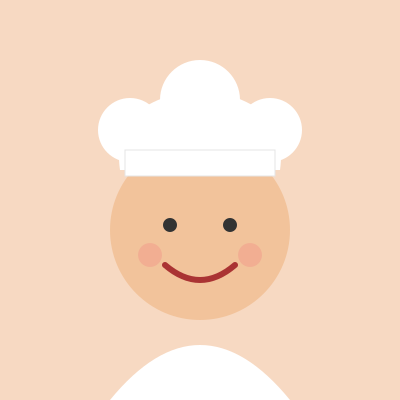

Про автора

Мене звати [Ваше ім’я]. Я люблю готувати й веду цей блог, щоб ділитися простими рецептами для щоденного меню.
Про блог
Усі рецепти я перевіряю на власній кухні. Якщо ви знайшли помилку або хочете запропонувати рецепт — напишіть мені.
Мій шлях
- 2024 — перші домашні рецепти для друзів.
- 2025 — створено перший сайт і зібрано добірку страв.
- 2026 — блог опубліковано в мережі.
Контакти
Пошта: example@example.com